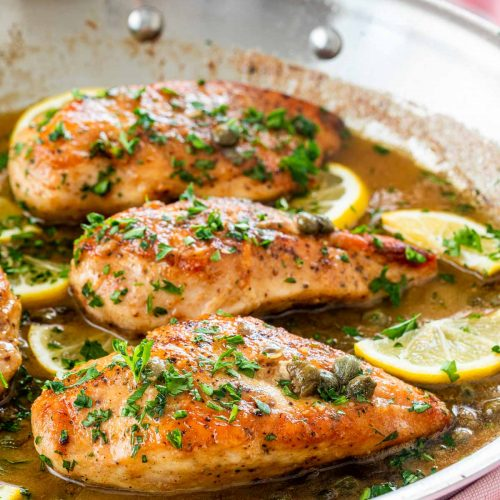

Chicken Piccata

Description
Tangy, zesty chicken breast cooked in fine, fine things. Wine! Lemon! Capers! Mamma mia!
Ingredients
- 2 boneless, skinless Chicken Breasts
- 1 1/2 teaspoons Kosher Salt
- 1 teaspoon Ground Black Pepper
- 2/3 cups Flour
- 3 tablespoons Olive Oil
- 3 tablespoons Butter
- 1/4 cup Dry White Wine
- 3 tablespoons Capers
- 1/4 cup Lemon Juice
- 1 teaspoon Lemon Zest
- 1/4 cup fresh chopped Parsley
Steps
- Slice chicken breasts in half lengthwise and lightly pound to 1/2-inch thick. Season evenly on both sides with salt and pepper. Dredge each piece in flour to coat the surface and shake off any excess flour.
- Heat 2 tablespoons oil and 1 1/2 tablespoons butter in a large skillet over medium-high heat until just beginning to smoke. Add 1/2 of the chicken and cook, undisturbed, until browned and easily released from the skillet, 2 1/2 to 3 minutes. Flip and cook for 2 more minutes. Remove from the skillet. Add remaining 1 tablespoon oil to the drippings and repeat the cooking process with remaining chicken. Reserve all chicken on a plate.
- Reduce heat to medium and melt remaining 1 1/2 tablespoons butter in the skillet. Add wine and capers and stir, scraping to release any browned bits from the skillet; bring to a simmer. Cook for 2 minutes to slightly reduce. Add chicken stock, lemon juice, and lemon zest; stir to combine. Bring to a simmer and cook for 2 minutes.
- Return chicken to the skillet and cook, turning occasionally in the sauce, until chicken is no longer pink in the center, the juices run clear, and the sauce has thickened slightly, 3 to 5 minutes.
- Remove from heat and sprinkle with parsley to serve.
Back to Index